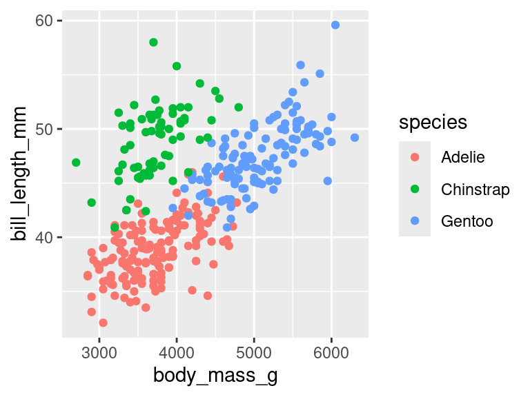
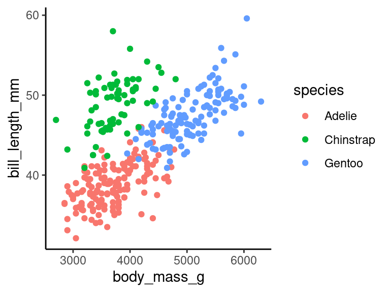
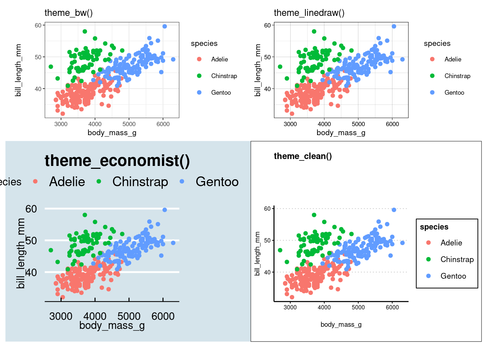
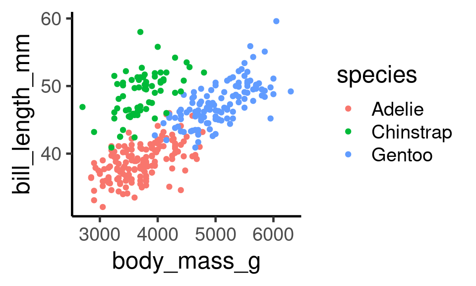
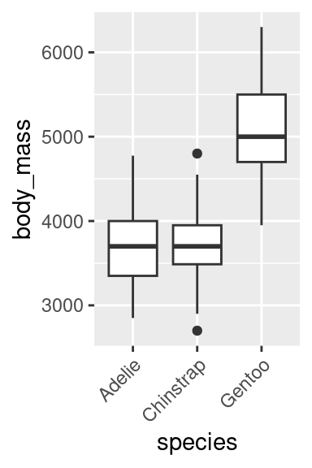
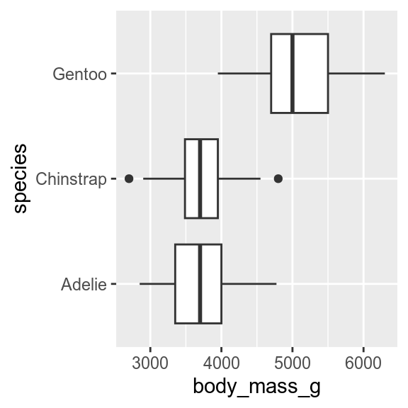
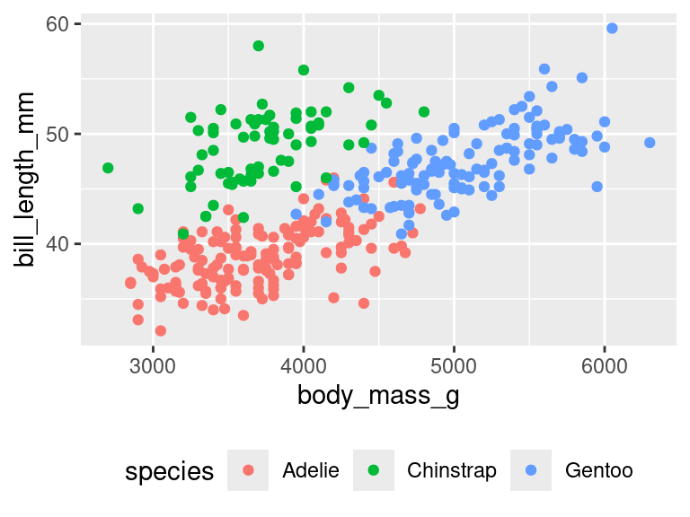
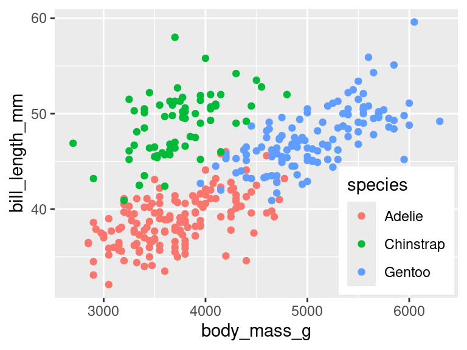
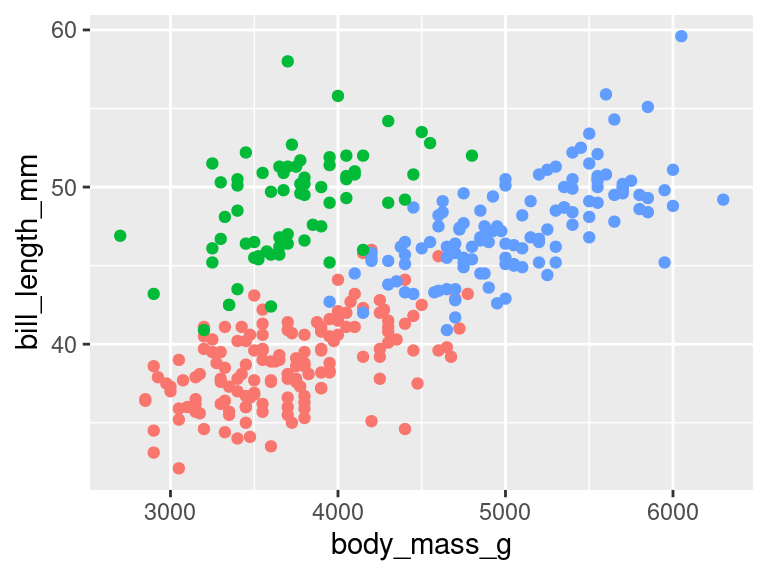
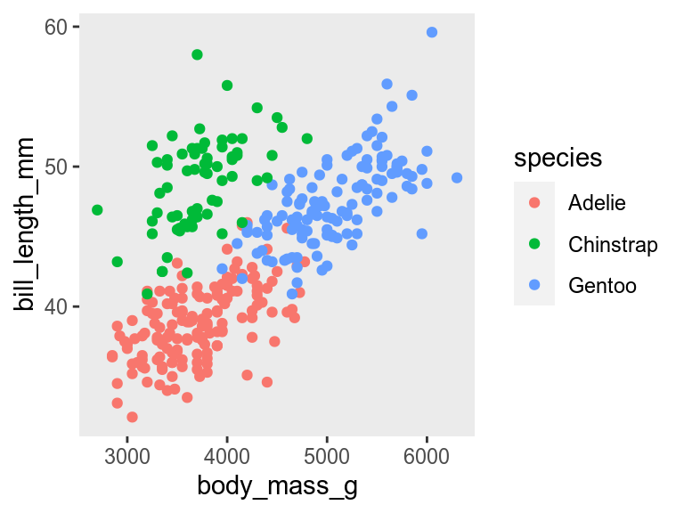

library(ggplot2)
p1 <- ggplot(penguins, aes(x = body_mass_g,
y = bill_length_mm,
colour = species)) +
geom_point()
p119 Themes
Themes let you customise the non-data elements of a plot. You can change the whole theme, or update just a few elements. Here is a plot with the default theme.

theme_grey()19.1 Complete themes
You can change the whole theme to a new pre-built theme by adding one of the theme_*() functions.
p1 +
theme_classic()
theme_classic()There are many pre-built themes, some in ggplot2, others in the ggthemes, cowplot, and other packages. You can also write your own.

ggplot2 and gthemes.19.1.1 Setting the font
All the theme_*() functions have an argument to set the base size of the font. The default (about size 11 for most themes) is normally fine for manuscripts and theses, but too small for presentations. Increase it to 18 or 20 so the audience at the back of the auditorium can read the text.
p1 +
theme_classic(base_size = 18)
theme_classic()19.2 Setting the default theme
If you are making several figures and want them all to have the same theme, you can set the default with theme_set(). I do this in the first chunk of quarto and R markdown documents.
19.3 Changing individual elements of the theme
Every non-data element of the plot can be changed with theme. Below are a few examples.
19.3.1 Rotating axis labels
Sometimes long axis labels need rotating to stop them overlapping.
p2 <- ggplot(penguins, aes(x = species, y = body_mass_g)) +
geom_boxplot()
p2
p2 +
theme(axis.text.x = element_text(angle = 45, hjust = 1))
Reading angled text is hard work, so consider alternative solutions to this problem, such as dodging the axis labels
p2 + scale_x_discrete(guide = guide_axis(n.dodge=2))
Or flipping the plot.
p2 + coord_flip()
19.3.2 Changing the legend position
By default, the legend is put to the right of the plot. It can be moved with the legend.position argument to theme().
p1 + theme(legend.position = "bottom")
If there is space, the legend can be moved into the plot by giving legend.position the x and y coordinates relative to the plot (0 is left or bottom, 1 is top or right). Use legend.justification to specify which corner of the legend should be in the position set by legend.position justify the legend.
p1 +
theme(
legend.position = c(x = 0.99, y = 0.01),
legend.justification = c(x = "right", y = "bottom"))
The legend can be removed with
p1 + theme(legend.position = "none")
This will remove all legends. If a plot has multiple legends, and you want to keep some of them, you get more control by using the show.legend argument to any of the geoms or by using guides()
19.3.3 Removing an element
You can remove non-data elements of the plot by setting them to element_blank().
p1 + theme(panel.grid = element_blank())
element_blank()Contributors
- Richard Telford